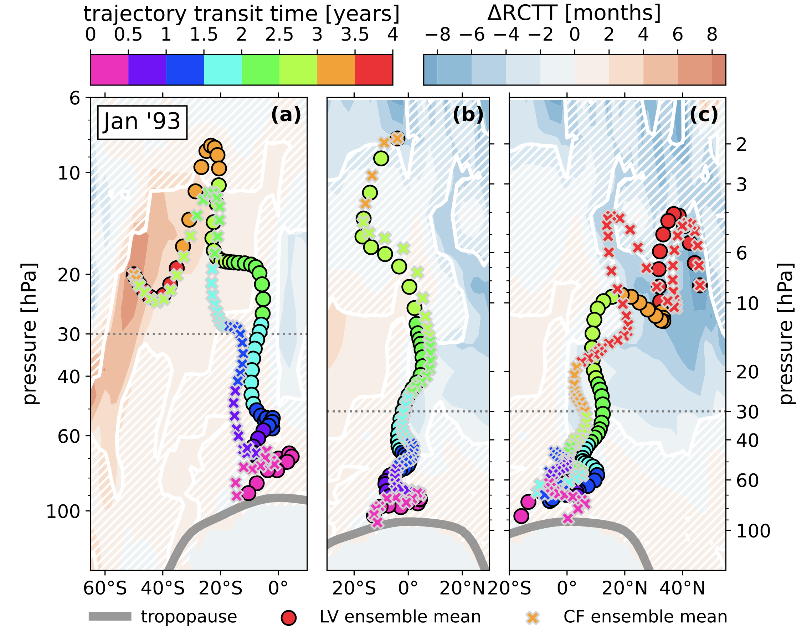

Research
I am currently a member of the Jablonowski Atmospheric Dynamics Modeling Group at the University of Michigan in Ann Arbor, MI. Most of my time is spent analyzing the climatic impact of simulated volcanic eruptions, and outfitting climate models with interesting idealized capabilities. See my slide decks, publications and GitHub repositories for samples of recent work.
My doctoral studies were spent in close collaboration with Sandia National Laboratory scientists on the CLDERA (CLimate impact: Determining Etiology thRough pAthways) Grand Challenge, where I worked to understand the ways in which sudden arrivals of aerosols into the stratosphere perturbs the global circulation. My work on the project is documented in my thesis and recent papers.
I was previously a student in computational cosmology at Argonne National Laboratory's CPAC group. For samples of my work there, see my description of our method of post-processed lightcone construction, as well as our paper detailing the creation of the DC2 synthetic galaxy catalog for the LSST DESC.
As a sample of my work, the image above shows the impact of stratospheric volcanic aerosol heating on long-term tracer trajectories in the meridional (latitude-vertical) plane, for 3 different regions in latitude; the southern hemisphere (left), tropics (center), and northern hemisphere (right). Trajectories with X's and circles show the average movement of air with and without the presence of a large volcanic eruption, respectively. In short, the interpretation is that presence of volcanic aerosols in the tropical stratosphere increases the speed of vertical motion in the equitorial region. See Figure 4.2 in my thesis for details.